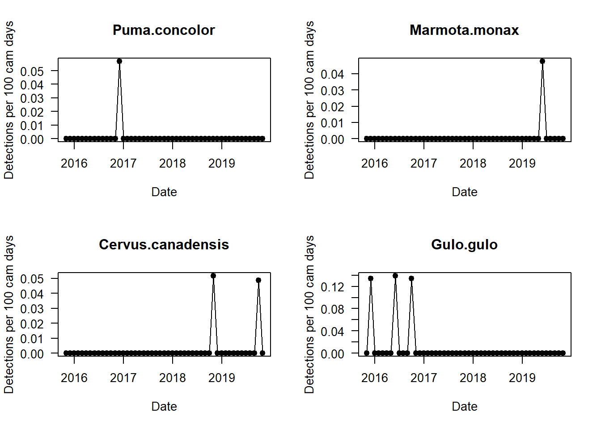
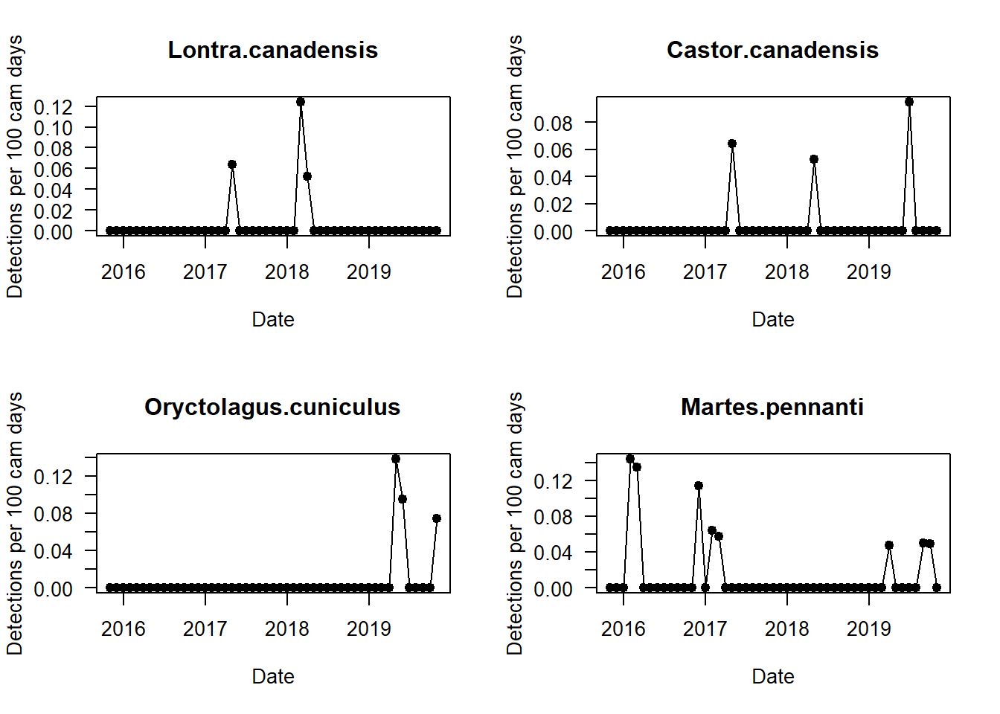
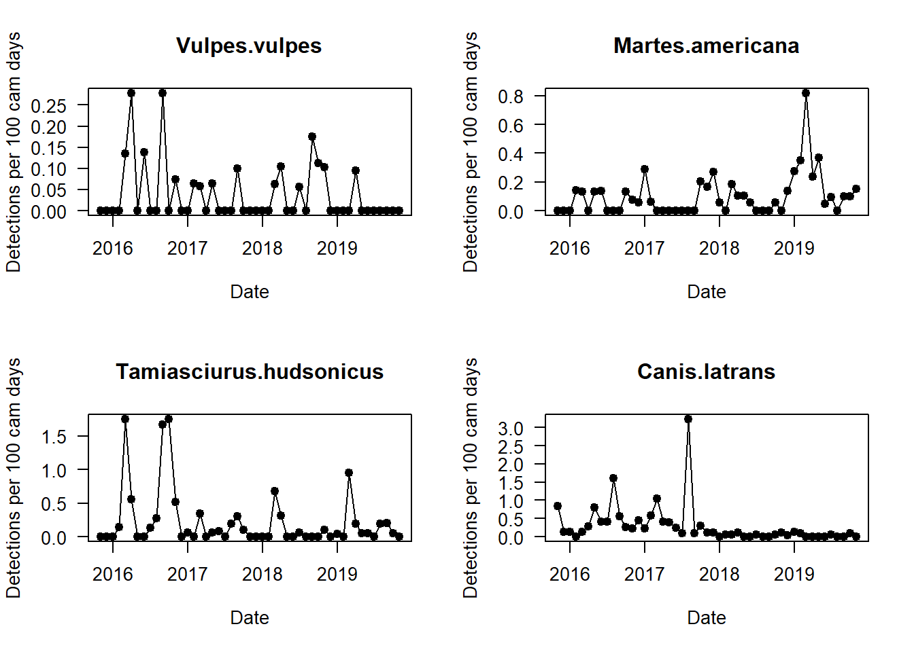
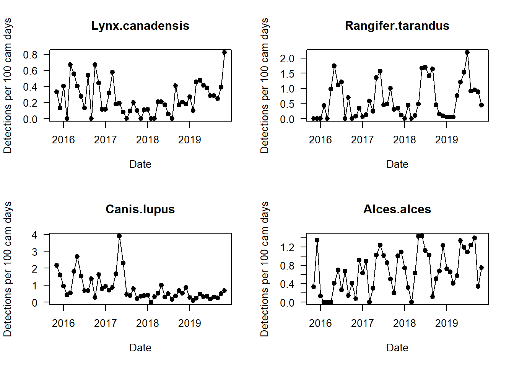
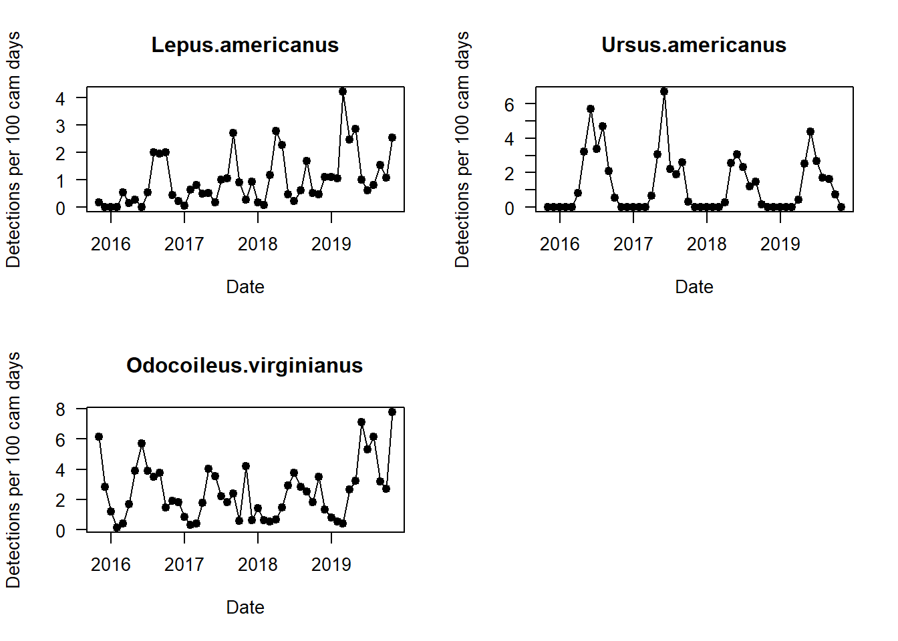
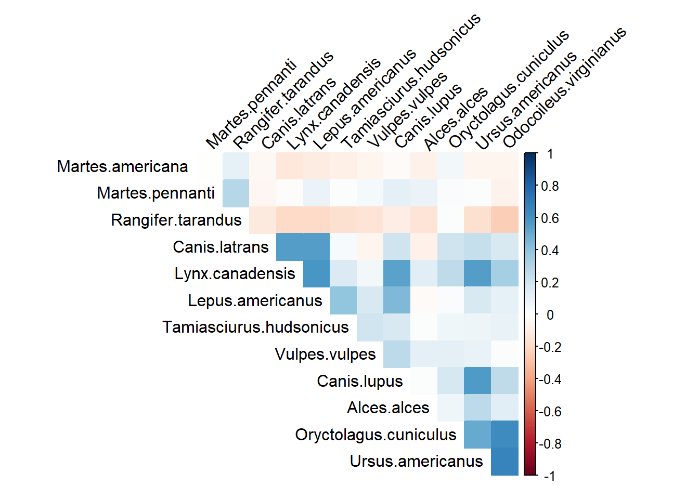

Chapter 9 Species specific capture rates
par(mfrow=c(2,2))
i <- 1
for(i in 1:length(sp_summary$sp))
{
plot(mon_summary$date, pull(mon_summary, sp_summary$sp[i])/(mon_summary$cam_days/100), # The pull commmand allows you to grab a specific column in a dataframe and turn it into a vector!
type="l",
las=1, ylab="Detections per 100 cam days", xlab="Date",
main=sp_summary$sp[i])
points(mon_summary$date, pull(mon_summary, sp_summary$sp[i])/(mon_summary$cam_days/100), pch=19)
}
Can you see any interesting patterns in here?
9.1 Spatial patterns in capture rates
We also often want to explore if there are any spatial patterns in capture rates, these can hint at any ecological relationships we might want to explore further. Here we do it for just a single species, the white-tiled deer.
Here we make use of the ‘total_obs’ data frame we imported earlier. We also use the ‘locs’ dataframe.
total_obs <- left_join(total_obs, locs)## Joining, by = "placename"focal_species <- "Odocoileus.virginianus"
focal_cr <- pull(total_obs, focal_species)/(total_obs$days/100)
m <- leaflet() %>%
addProviderTiles(providers$Esri.WorldTopoMap, group="Base") %>%
addCircleMarkers(lng=locs$longitude, lat=locs$latitude,
# Add a popup of the deployment code
popup=paste(locs$placename),
radius=(focal_cr/max(focal_cr)*10)+1, stroke=F,
fillOpacity=0.6)
mTry it for some different species. Can you see any different patterns?
9.2 Species co-occurences
Camera trap data are being increasingly used to model multiple species communties. We can use the corrplot package (ADD LINK TO VINGNETTE) to explore the co-occurrence patterns of the species in the community.
The plot below uses the ‘total_obs’ dataframe, and performs pairwise correlations between the species on the left, and the species on the top row. Blue colours mean that at locations where you have high counts of one species, you also have high counts of the paired species. Red colours mean if you have high counts of one species, then you are likely to have low counts of the species pair (or vice-versa).
We implement a more nuanced form of this data analysis in A LATER CHAPTER
par(mfrow=c(1,1))
tmp <- total_obs[, sp_summary$sp]
tmp <- tmp[colSums(tmp)>5]
M <- cor(tmp)
corrplot(M, method="color", #col=matrix(col(200)),
type="upper", order="hclust",
#addCoef.col = "black", # Add codepicient of correlation
tl.col="black", tl.srt=45, #Text label color and rotation
# Combine with significance
#p.mat = p.mat, sig.level = 0.01, insig = "blank",
# hide correlation codepicient on the principal diagonal
diag=FALSE
)